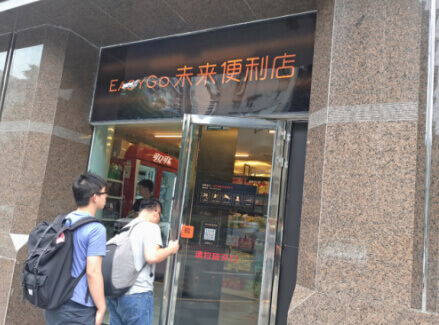
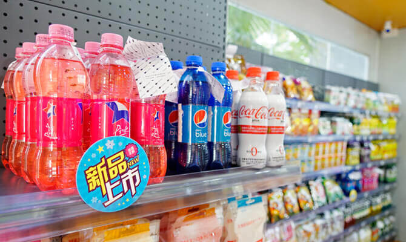
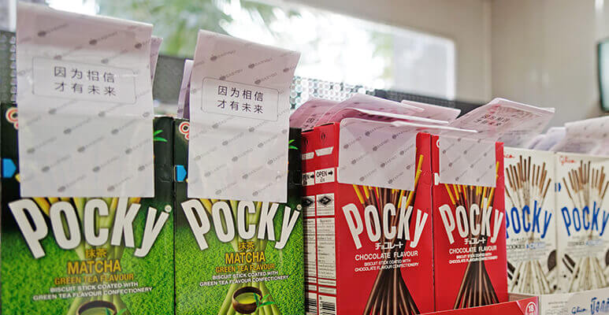
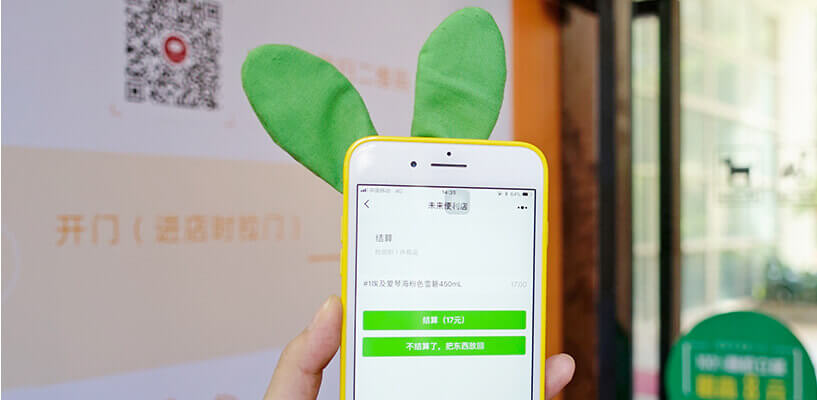

无人便利店红热发烫 广州用小程序的EasyGo
这些天，微信总部所在地广州，第一家使用微信小程序的便利店——EasyGo 未来便利店开业了，坐落在广州的成熟商圈中华广场。

无人便利店
店门上醒目地标明“请扫码开门”。这个码，是未来便利店小程序的二维码。只有微信 6.5.3 以上的版本，才能使用小程序。如果你用的是旧版本微信，就在门口站着吧。
我用微信扫了扫二维码，手机马上打开“未来便利店”的小程序，提醒我，门已打开。

这时 ，头上的一盏圆灯突然变绿了(这很微信)，原本紧闭的门也松动了一下，我拉门走了进去。
买东西只需三步
从店内装潢看，EasyGo便利店和普通便利店差别不大。十平方米左右，饼干、辣条、饮料各种小零食一应俱全，就是没有店员。

怎么结账呢？我随后发现，店内每件商品上都粘贴有一个“未来便利店”小程序码的白色贴纸。每个贴纸背后，都有一个 RFID 标签。
相比Amazon Go的生物识别，RFID是一种非常成熟的技术，你只要拿着商品，走到门口的结算区，两边的机器就会通过射频技术，扫描粘着 RFID 标签的商品，自动结算，你输个密码就OK。
我拿两件商品，站到结算区，打开“未来便利店”小程序，选择“结算”，马上出现我手中拿的两件商品名和商品总价，迅雷不及快播之势。
确认无误，点击“结算”，就可以买单。而整个购物过程，我只进行三步操作：扫码进店——挑选商品——用小程序支付。
取消收银员是所有无人便利店都在强调的事，但取消收银台，把店门设计成一个独特的支付区域，这是EasyGo第一个这么干的。
如果“偷东西”
在无人便利店“偷东西”会怎样？如果一个人没买东西，用小程序打开门，另一个人拿了东西的人跟着他出去，岂不是……我决心放下节操，当一次“小偷”。
我串通在店内购物的一名好心顾客，让他扫码打开门。然后，我拿着一包水果糖，大摇大摆跟着他走出去，期间没有出现报警和提示。
当我以为自己发现一个大 bug沾沾自喜时，手机突然收到爱范儿某单身男主编的微信：
原来，Easy Go 未来便利店竟然马上就发现了我的行为，并且迅速找到监控视频，发给了主编！正在我为自己名声不保而担忧时，店内的摄像头突然说起话来：
目前 EasyGo 未来便利店的摄像是 24 小时监控的，如果出现类似的偷盗行为，我们会马上得知。
原来，从我一进门开始，摄像头背后的人，就已经在关注着我的一举一动。最后离开无人超市时，我还是把那包水果糖买走了。
为什么用小程序
为什么选择小程序作为EasyGo 未来便利店的支付方式？
EasyGo 未来便利店的联合创始人王牧牧说：
“选择小程序是因为，我们发现小程序的理念和我们的无人便利店的理念非常接近。”
“小程序不是一个APP，不需要重新注册，再绑定手机等等。它是为用户解决需求的，我们对无人便利店的想法也是这样，不需要用户做过多的操作，进店拿到商品，就自主结账离开。”
“通过小程序，就能够达到我们这种设想。”

王牧牧还透露， EasyGo团队于今年年初开始开发小程序，到 4 月份实现用小程序完成无人支付的整体流程设计，然后就是6月份开出这家试验店。
至于EasyGo的迭代计划，王牧牧表示，目前许多用户的反馈是，用小程序进行结算，感应时间低于 1 秒，支付很快，体验很好。因此，团队会坚持极简的体验，只呈现核心功能，不会轻易增加非核心功能，防止干扰用户。另外，她还透露，EasyGo目前正计划在小程序上申请开通免密支付，以进一步提升顾客的使用体验。